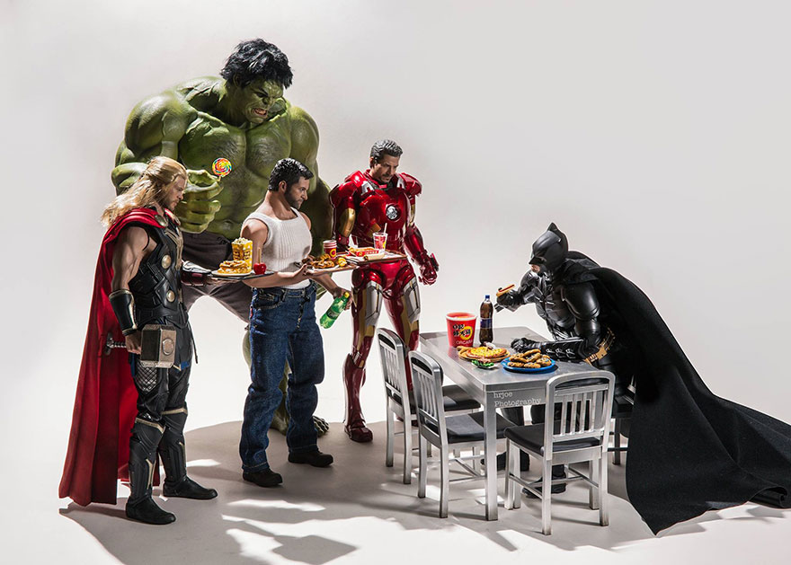

Lima Menit Lagi...
Tanggal : 19 July 2016
Penulis : BeHero
Dibulan Ramdhan tahun ini. Superhero kita yang berasal dari kota Gotham yaitu Batman, ketahuan sedang makan. Padahal jam untuk berbuka puasa tinggal lima menit lagi. "Saya tadi habis menyelamatkan kakek tua yang hampir tenggelam dilaut, tetapi pas saya menyelamatkan nya, saya meminum sedikit air lautnya, saya pikir itu batal. Akhir sampai dirumah saya makan dan tidak melihat jam di dinding". Ujarnya Batman.